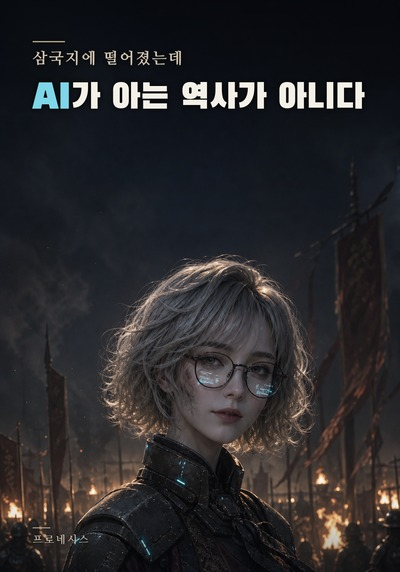

서기 200년 관도. 눈을 떴을 때 남은 것은 탄약 서른네 발과 AI 하나뿐이었다.
『이 일대는 관도로 판단됩니다, 중위님.』
천리는 삼국지를 안다. 정사와 연의와, 내무반에서 하던 게임까지 통째로 삼킨 아카이브를 갖고 있다. 그 오락물 계열의 이름은 「버밀리온(VERMILION)」이다.
문제는 그 기록이 자꾸 틀린다는 것이다.
어느 계열에도 없는 시체 일곱 구. 기록에 없는 화살깃. 오지 않았어야 할 밤에 오는 기마 여섯.
장수도 군사도 아니었다. 계측 요원이었다. 할 줄 아는 것은 세는 일과 재는 일과 — 사람을 살려서 내일까지 보내는 일뿐이다.
탄약은 줄어들고, 겨울은 오고, 아는 역사는 매일 조금씩 어긋난다.
미래 지식으로 단번에 뒤집지 않습니다. 지식이 통하려면 그 시대의 자원과 기술과 정치를 먼저 통과해야 합니다.
절대악을 쓰지 않습니다. 반대편에 선 사람들도 전부 합리적이고, 각자 자기 이야기의 주인공입니다.
공짜로 이기지 않습니다. 이긴 자리에는 잃은 시간이나 버린 물자나 다친 사람이 남습니다.
| 작가 | 프로네시스 |
|---|---|
| 장르 | 대체역사 · 퓨전 |
| 연재 | 매일 오후 8시 한 편 · 문피아 |
| 언어 | 한국어 · 일본어 · 번체 중국어 · 영어 — 게임 내 「서하의 기록」으로 4개 언어 수록 |
소설 1화에서 서하가 회상하는 게임 「버밀리온」은 실재하는 게임입니다. VERMILION — 삼국지 명장 수집 RPG. 난세를 평정할 그대의 장수를 모으는 게임이며, 2026년 9월 App Store에 출시되었습니다. 광고 없이 한 번의 구매로 완결되는 삼국지 명장 수집 RPG — 한국·일본·대만.
소설은 게임을 몰라도 단독으로 읽히도록 쓰였습니다. 게임을 아는 분에게는 천리의 아카이브가 조금 다르게 읽힐 뿐입니다.